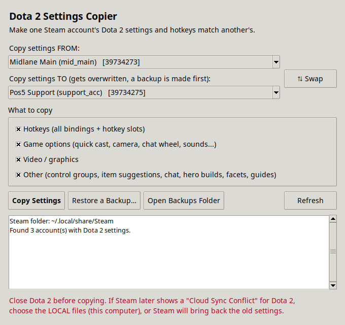
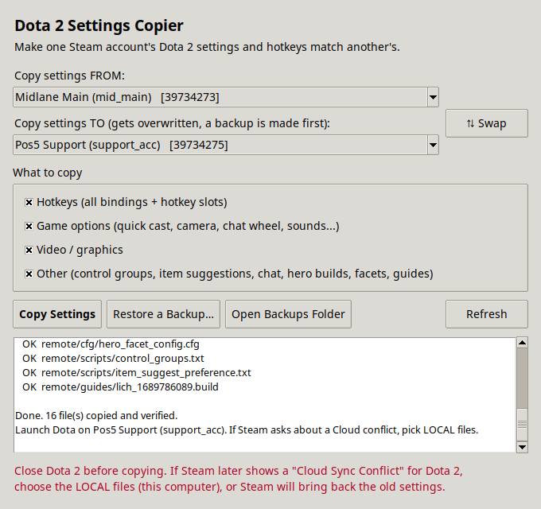
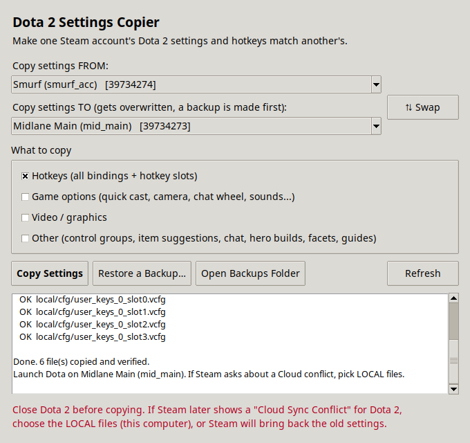

Copy every Dota 2 setting and hotkey from one Steam account to another in one click. No more rebinding everything by hand.
Download
Pick what to copy. Everything is ticked by default.
Every binding, including all four hotkey slots.
Quick cast, camera speed, chat wheel, sounds and every other option.
Resolution, quality and the rest of your display settings.
Control groups, item suggestions, chat settings, hero builds, facets and guides.
The account being changed is backed up first. One click restores it.
Match stats, friends, guild data and voice bans are never touched.
Takes about ten seconds.


Latest version, straight from GitHub.
Unzip and run DotaSettingsCopier.exe. If SmartScreen appears, click More info, then Run anyway.
Unzip, then right-click the app and choose Open the first time. It isn't signed by Apple.
Download for macOSExtract and run: tar -xzf DotaSettingsCopier-linux.tar.gz && ./DotaSettingsCopier